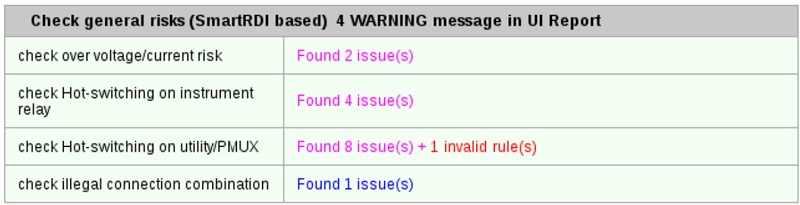
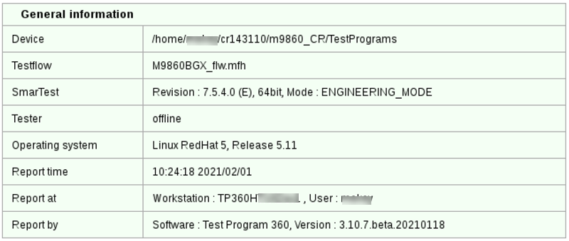

Release check reports
The report displays the release check results of the items you selected and the general information for the release check.
By default, the release check report is saved in the device/TP360_Reports/ReleaseCheck_Reports/ directory. To save it to a different directory, click the icon in the report view.
You can click General information or Issue summary at the top of the report to jump to the corresponding section.
Issue summary
This section shows the release check result summary of all the items you selected before executing the release check.

The results are listed in a table which consists of subsections categorized by the checked items. The result summary of each subsection is displayed at the right of the subsection title.
- Name of the checked item
- Lists the name of each checked item.
- Check result
- Shows the number of issues or invalid rules found in the checked item. You can click the
link to see the report details of this checked item.
No link is available for checked items without issues or invalid rules.
General information
This section displays the general information for this check, such as the device information, testflow, SmarTest version and mode, and the time of report generation.

Functional changes
- Introduced in SmarTest 7.4.3